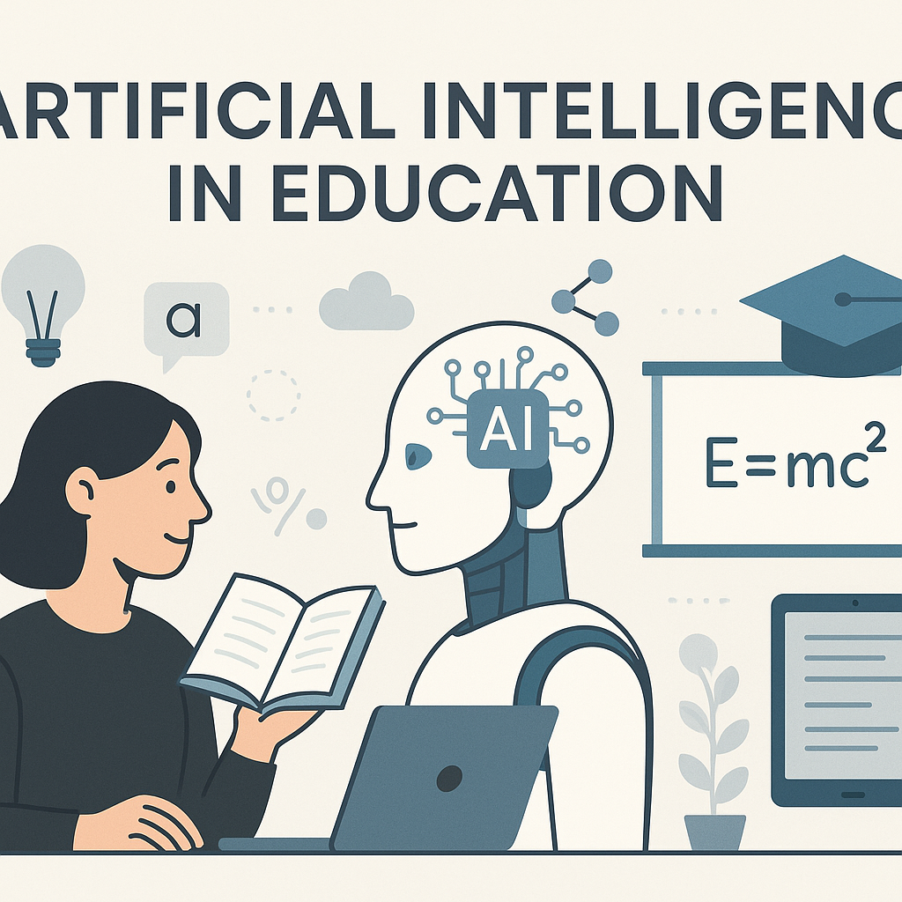

**Headline: The Classroom Has a New Co-Teacher: How AI is Rewriting the Rules of Learning** Forget the sci-fi trope of robots replacing teachers at the front of the room. The real AI revolution in education isn't about substitution—it’s about **supercharging**. Right now, in classrooms from rural Kenya to downtown Manhattan, Artificial Intelligence is shifting the paradigm from "one-size-fits-all" to "one-size-fits-one." ### The End of "Teaching to the Middle" Traditionally, a teacher with 30 students aims for the average. The advanced kids wait; the struggling kids hide. AI shatters this bottleneck. * **Adaptive Learning Platforms** (like Khanmigo or DreamBox) analyze a student’s hesitation, error patterns, and speed in real-time. If a student masters fractions but stumbles on decimals, the curriculum instantly pivots. * **24/7 Socratic Tutors:** LLMs don’t just give answers; they can be prompted to *guide* discovery. "Don't solve for *x*. Ask me what operation I should do first." ### Gifting Teachers Their Most Precious Resource: Time Teachers didn’t sign up to grade 100 multiple-choice quizzes or format lesson plans at 11 PM. * **Automated Grading:** AI now handles essays (checking structure, evidence, and grammar), coding assignments, and math proofs, returning feedback in seconds. * **The "First Draft" Partner:** Need a differentiated reading passage for three reading levels? A rubric aligned to state standards? A parent email translated into Spanish? Done in 30 seconds. The result? Teachers reclaim hours for what humans do best: **mentorship, SEL (Social-Emotional Learning), and sparking curiosity.** ### Accessibility Finally Gets an Upgrade For decades, "accessibility" meant a PDF reader or extra time on tests. AI makes it dynamic. * **Real-time translation** breaks language barriers for ELL students instantly. * **Speech-to-text / Text-to-speech** is now indistinguishable from human narration, empowering dyslexic or visually impaired learners to consume content at intellectual level, not decoding level. * **Simplification tools** can rewrite dense academic text into plain language without losing nuance. ### The "Human in the Loop" Imperative It’s not all smooth sailing. Hallucinations (confident lies), algorithmic bias in training data, and student data privacy are non-negotiable guardrails. * **Critical Thinking is the New Core Skill:** Students must learn to *verify* AI output, not just consume it. * **Equity Alert:** If only wealthy districts get the best AI tools, the achievement gap widens into a canyon. Open-source models and public funding are essential. ### The Verdict AI won't replace teachers. **Teachers who use AI will replace teachers who don't.** The classroom of the future isn't a sterile tech lab. It’s a vibrant, messy, human space where the administrative drudgery is automated, the pacing is personal, and the teacher—finally freed from the copier machine—is sitting knee-to-knee with a student, asking: *"What do you think?"* **That isn't artificial intelligence. That’s intelligence amplified.**
**Artificial Intelligence in Education – A Brief Overview** Artificial Intelligence (AI) is transforming education by enabling personalized, efficient, and data‑driven learning experiences. Key applications include: * **Adaptive Learning Platforms** – AI tailors content, difficulty, and pacing to each student’s strengths, weaknesses, and learning style, keeping learners engaged and reducing gaps. * **Intelligent Tutoring Systems** – Chatbots and virtual assistants provide instant feedback, answer questions, and guide problem‑solving, offering one‑to‑one support at scale. * **Analytics & Insight** – Learning analytics track performance, attendance, and engagement patterns, helping educators identify at‑risk students early and refine curricula. * **Automation of Administrative Tasks** – AI streamlines admissions, grading (especially for objective assessments), scheduling, and resource allocation, freeing staff to focus on teaching. * **Accessibility & Inclusion** – Tools like speech‑to‑text, language translation, and assistive tutoring help learners with disabilities or language barriers. **Benefits** - Personalized pathways boost motivation and achievement. - Real‑time feedback accelerates learning. - Cost‑effective scaling of high‑quality instruction. - Data‑driven decisions improve institutional effectiveness. **Challenges** - Data privacy and security concerns. - Risk of algorithmic bias reinforcing inequities. - Need for teacher training and pedagogical integration. - High implementation costs and infrastructure requirements. - Maintaining human interaction and mentorship in digital environments. **Future Trends** - Deeper integration of generative AI for creating customized lesson plans and multimedia resources. - Immersive experiences through AI‑enhanced VR/AR tutoring. - Greater emphasis on explainable AI to build trust among educators and stakeholders. Overall, AI holds significant promise for making education more inclusive, efficient, and learner‑centered, provided its deployment is thoughtful, ethical, and collaboratively designed with educators at the core.
Here are **4 distinct options** tailored for different platforms and vibes. Pick the one that fits your brand voice best! --- ### Option 1: The "Thought Leader" (Best for **LinkedIn**) *Tone: Professional, insightful, sparks conversation.* **Headline:** Stop asking "Will AI replace teachers?" Start asking "How does AI amplify the human connection?" 🤝🤖 **Body:** We’re past the hype cycle. The real magic in EdTech right now isn’t automation—it’s **augmentation**. ✨ **What AI does best:** Grading rubrics, generating differentiated practice sets, translating languages in real-time, analyzing learning gaps at 2 AM. ❤️ **What humans do best:** Noticing the student who’s quiet today. Building trust. Modeling critical thinking. Navigating the "why" behind the "what." The classroom of the future isn't *Teacher vs. Machine*. It’s **Teacher + Machine = More time for humanity.** I’m seeing educators use saved hours to: ✅ Run 1:1 mentorship sessions ✅ Design project-based learning ✅ Actually leave on time for once (revolutionary, I know) **The prompt for you:** What is *one* admin task you’d offload to AI tomorrow to reclaim your energy for students? 👇 #EdTech #FutureOfEducation #ArtificialIntelligence #Teaching #AIInEducation #EdLeadership #TeacherLife --- ### Option 2: The "Visual & Punchy" (Best for **Instagram / Threads / Facebook**) *Tone: Relatable, aesthetic-friendly, uses formatting for readability.* **Caption:** **POV: You’re a teacher in 2024.** 🍎➡️🤖 **The Old Way:** ⏳ 10 PM grading quizzes. ⏳ Sunday lesson planning. ⏳ "One size fits all" worksheets. **The AI Way:** ⚡ **Instant feedback loops** (students learn *while* doing, not days later). ⚡ **True differentiation** (5 reading levels for *one* article in 30 secs). ⚡ **Your "Teacher Assistant" on demand** (rubrics, parent emails, IEP summaries, brainstorming). **But here is the truth bomb:** 💣 AI writes the lesson plan. **YOU** bring the spark. AI analyzes the data. **YOU** build the relationship. AI generates the idea. **YOU** facilitate the magic. ✨ **It’s not cheating. It’s evolving.** 🌱 **Save this post** for the next time someone says "AI makes teaching lazy." Then drop a 🤖 in comments if you’ve used AI to save your sanity this week! #TeacherTok #EdTech #AIForTeachers #TeacherLife #FutureReady #Differentiation #WorkSmarterNotHarder #EducationReform **📸 Visual Idea:** A split-screen Reel/Carousel. * *Left side (Chaos):* Teacher drowning in papers, clock says 11 PM. * *Right side (Calm):* Teacher sipping coffee, laptop open with "Lesson Plan Generated," chatting with a student. --- ### Option 3: The "Thread Style" (Best for **X / Twitter**) *Tone: Fast-paced, data-driven, highly shareable.* **Tweet 1/6** Everyone talks about AI *cheating* in education. Nobody talks about AI **equity**. 🧵👇 **Tweet 2/6** Historically, "personalized learning" was a luxury good. Only wealthy districts had the tutors, the low ratios, the custom curriculums. AI just democratized the tutor. 📉➡️📈 **Tweet 3/6** A student in a rural district with 30 kids/class now has: ✅ A 24/7 Socratic tutor (Khanmigo, etc.) ✅ Instant translation for ELL parents ✅ Text-to-speech / Speech-to-text for accessibility ✅ Code interpreter for CS without a CS teacher **Tweet 4/6** The gap isn't "AI vs No AI." The gap is **Teachers trained to leverage AI** vs **Teachers blocked from it.** **Tweet 5/6** We don't need "AI Policies" that ban. We need **AI Pedagogy** that integrates. * Prompt engineering = Critical thinking * Hallucination hunting = Media literacy * Co-writing = Voice development **Tweet 6/6** The chalkboard was once "controversial tech." The calculator was "cheating." The internet was "distraction." AI is the new infrastructure. Let’s build the on-ramps, not the walls. 🛣️ #AIEd #EdChat #EquityInEducation #FutureOfWork --- ### Option 4: The "Practical & Actionable" (Best for **Newsletters / Faculty Slack / PD Groups**) *Tone: Helpful, "Monday-morning ready," low fluff.* **Subject Line / Hook:** **3 AI Workflows to steal for your planning period tomorrow ☕** **Body:** Forget the sci-fi stuff. Here is how teachers are *actually* saving 5+ hours/week right now: ### 1. The "Monday Morning Differentiator" 🎯 **Prompt:** *"Take this 9th grade biology text [paste text]. Rewrite it at a 5th, 7th, and 11th grade reading level. Keep key vocab bolded. Create 3 comprehension questions per level."* **Result:** 4 versions of the same lesson in 45 seconds. Every kid accesses the core content. ### 2. The "Feedback Multiplier" ✍️ **Workflow:** Students submit drafts -> You highlight *two* focus areas per kid -> Paste rubric + highlight into AI -> **Prompt:** *"Act as a writing coach. Give specific, encouraging feedback on *only* these two areas. Tone: Warm but rigorous."* **Result:** You give deep feedback on 30 essays in the time it used to take to do 5. ### 3. The "Parent Comms Generator" 📧 **Prompt:** *"Write a positive 'sunshine call' script for a parent of a student who [specific win: helped a peer / persisted on hard problem / improved attendance]. Keep under 90 seconds. Include one specific detail I can mention."* **Result:** Relationship building on autopilot. Parents *love* these. *** **⚠️ The Golden Rule:** Never paste student PII (Names, IDs, IEP details) into public LLMs. Use district-approved tools (MagicSchool, SchoolAI, Khanmigo) or anonymize data first. **Your turn:** Which workflow are you testing this week? Reply '1', '2', or '3'! 👇 --- ### 💡 **Pro-Tips for Engagement (Apply to ANY option):** 1. **Tag a Tool:** Mention specific tools you love (e.g., @MagicSchoolAI, @KhanAcademy, @Canva, @Diffit, @Curipod). They often reshare! 2. **Add a Poll:** "How much time do you spend grading weekly? A) 0-2h B) 3-5h C) 6-10h D) My weekends are gone 😭" 3. **The "First Comment" Strategy:** Post your *own* answer to your question in the first comment to break the ice. 4. **Alt Text:** Always describe your images for accessibility (screen readers). 5. **Video > Image > Text:** If you have 30 seconds, record a quick selfie-video talking about *one* specific win. Algorithms love face-time.
